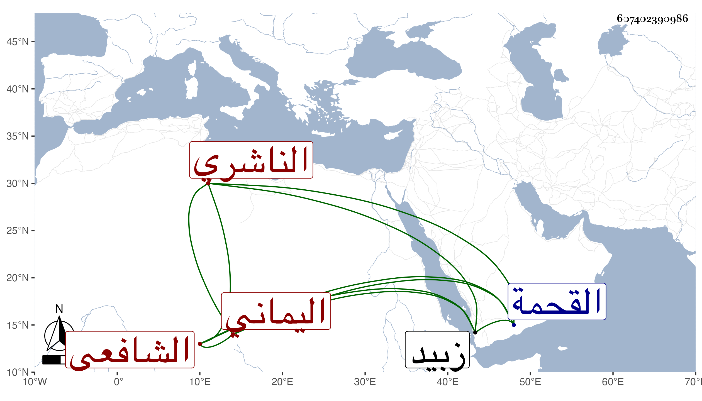

0902Sakhawi.DawLamic.ITO20230111-ara1.EIS1600.607402390986
Biography ID: 607402390986
208
محمد بن عبد الله بن عمر بن أبي بكر بن عمر بن عبد الرحمن بن عبد الله أبو عبد الله بل أبو النجباء الناشري اليماني الشافعي . ولد في في ذي الحجة سنة ثلاث وثلاثين وسبعمائة ، وتفقه بأخيه إسمعيل ثم بالقاضي أبي بكر بن علي الناشري وآخرين منهم الشرف أبو القسم بن موسى الدوالي وكان يدرس كل يوم جزءا من كتابه التنبيه وولي قضاء القحمة ثم قضاء الكدراء ثم زبيد فلم تطل مدته فيها ، وكان معتقدا قائما بالمعروف ودفع المنكر لا تأخذه في الله لومة لائم غير مصرف لأوقاته في غير الطاعات مواظبا على القيام والصيام له كرامات ككونه فرغ سليط سراجه فبصق فيه فأضاء كنحو ما اتفق للرافعي وكنية النبي صلى الله عليه وسلم له في منام بأبي النجباء فكان كذلك مع حسن شكالة وخلق وتمام عقل وهيبة ومروءة ، وله تصانيف كالتاريخ والنصائح الإيمانية لذوي الولايات السلطانية ومختصر في الحساب وفي مساحة المثلثة وضبطه بقوله :
| إذا رمت تكسير المثلث يا فتى | فجمعك للإضلاع أصل لنا أتى |
| ونصف لمجموع الضلوع فابتده | وخذ كل ضلع فاعرضه مفاوتا |
| على النصف ثم الضرب للبعض بهيع ... | ونفذ ببعض ونصف فاعلمن متثبتا كذا |
ورسالة تعقب بها إنكار عياض على الشافعي في قوله : أنه خالف في وجوب الصلاة على النبي صلى الله عليه وسلم وأخذ عنه الأئمة كالبدر حسين الأهدل ومحمد بن نور الدين . مات في ذي الحجة سنة إحدى وعشرين ، طول الناشري ترجمته .
